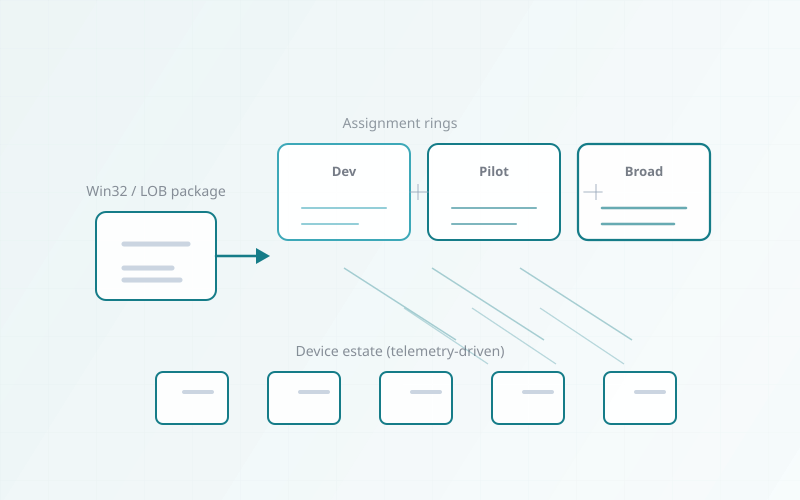

Fleet operations · Posture & assignments
Enterprise endpoint control plane
Once devices were in tenant, the problem was keeping configuration, compliance, and app truth aligned across a mixed Windows fleet—so drift, failed deliveries, and silent mismatches did not accumulate into support debt and weak audit signals.
Operations focused on baseline and profile stewardship, ringed application change, compliance evaluation hygiene, and enrollment and sync triage—with Autopilot-fed devices folded into the same day-two discipline so intake investment was not undone weeks later.
Environment context
The estate was a large, mixed Windows 10/11 population—multiple build levels, regional variance, and hardware lines that did not all behave the same under the same policy set. Intune was the authoritative management plane, but “managed” in the portal still allowed compliance drift, stale app states, and enrollment edge cases that showed up as tickets. The operating challenge was not a single migration event: it was keeping configuration intent aligned with reality week after week while Autopilot and join flows continued to feed new devices into the same model.
Why consistent Intune operations mattered
Without a disciplined operations loop, the fleet drifts: one region blocks updates differently, a line-of-business app silently fails detection, or a compliance policy reads “success” while the device still misses a control Conditional Access expects downstream. That produces repeatable support debt and weakens trust in the modern workplace story. The programme treated Intune as production infrastructure—changes shipped with the same care as identity or network changes, and exceptions were time-bound and visible.
The objective was standardised experience for users and predictable signals for security and audit stakeholders—anchored in what Intune actually enforces, not aspirational diagrams.
Core management model: policy, groups, and app lifecycle
Intune carried device configuration, update cadence, and application intent; Entra ID groups—including dynamic device groups—expressed who and what received each setting without manual membership churn. The assignment model separated organisation-wide baselines from targeted overlays so exceptions did not fork the estate into anonymous one-offs.
Policy plane
Configuration profiles and security baselines delivered the non-negotiables; change windows and ringed previews reduced surprise on sensitive controls.
Targeting
Dynamic rules for OS version, ownership, region, or role attributes kept assignments aligned with reality as devices moved between states.
Applications
Win32 lifecycle used required vs available semantics, explicit detection, and supersedence where upgrades replaced older packages—so installs were verifiable, not “pushed and hoped.”
{kind=link}

Key operational areas in steady state
Day-two work rotated across compliance dashboards, deployment monitoring, profile conflict triage, and enrollment health—with clear owners so issues did not bounce between “Intune” and “desktop” with no resolution path.
Compliance & baselines
- Compliance policies tracked posture signals used for access and reporting; drift triggered remediation flows or ticket creation—not silent ignore.
- Security baselines aligned to organisational hardening choices without claiming full zero-trust architecture beyond Intune’s scope.
Apps, profiles, provisioning
- Win32 delivery monitored failure buckets, content download health, and dependency chains.
- Configuration profiles were versioned and reconciled when OS upgrades changed CSP behaviour.
- Autopilot context: enrollment completion and ESP outcomes fed the same compliance and app model—new devices landed in the same operational queue as refreshes.
Real-world failures and how they were cleared
Production estates expose policy sync delays, app installs that time out, compliance evaluations that lag behind reality, and enrollment inconsistencies across Wi-Fi, credential, or hardware variance. The response pattern combined Intune diagnostics, MDM event logs, Graph-backed checks where appropriate, and bounded remediation scripts—with changes rolled back when a fix collided with another assignment layer.
- Sync backlog: Separated service-side delay from mis-targeting by validating scope, filter rules, and last sync timestamps before re-enrolling devices.
- App failures: Detection rules and dependency order were fixed first; only then were broader assignment changes considered.
- Compliance drift: Retrigger evaluations, confirm prerequisite services, and align conditional logic with what CA policies actually consumed.
- Enrollment inconsistencies: Join state, certificate readiness, and Autopilot profile match were checked as a sequence—not as unrelated tickets.
Operational impact on the fleet
The measurable shift was fewer repeat device-class incidents, faster closure on well-typed Intune failures, and a workplace experience that stopped depending on a handful of engineers’ tribal knowledge.
- Consistent configuration across cohorts as baselines and apps converged on shared rings.
- Fewer device-related support loops caused by silent policy or app mismatch.
- Improved deployment reliability through detection discipline and monitored rollouts.
- Standardised modern workplace experience for users joining via existing Autopilot flows—same compliance and app intent after first boot.
Ongoing tuning and change discipline
Intune operations succeed when change is continuous but controlled: Windows servicing, vendor app updates, and new hardware classes constantly stress the model. A regular review cadence—compliance trends, top failure codes, ring health, and exception ageing—kept policy debt from compounding.
Autopilot remained the on-ramp; day-two Intune work ensured devices stayed inside the same guardrails after enrollment—so provisioning investment was not undone by unmanaged drift two weeks later.
What a mature Intune operations posture delivered
The estate gained a repeatable operating rhythm: clearer ownership, fewer ambiguous failures, and an engineering narrative that matched what admins saw in the admin centre and what users felt at the desktop.
Operational results
- Stable compliance and configuration signals aligned to organisational baselines—not perpetual firefighting.
- More predictable app outcomes through rings, detection, and monitored remediation.
- Cleaner enrollment and sync handling with documented triage paths tied to Intune tooling.